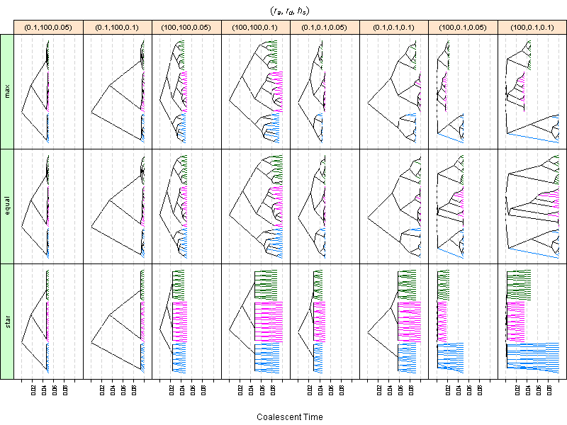

ms()
The R script
(ex_trees.r)
uses ms() to generate trees based on Coalescent Theory
in different conditions and scenarios and draws in the following plot.
Each panel has 50 samples in 3 groups (15, 20, 15).
In the plot, the conditions,
,
indicate the growth rate of ancestral trees,
the growth rate of descendent trees, and
the total height of the trees, respectively.
The scenarios,
max, equal and star are
different scaling methods for descendent trees.
These trees can be applied to seqgen() to generate sequences
for simulation and bootstrap studies.
